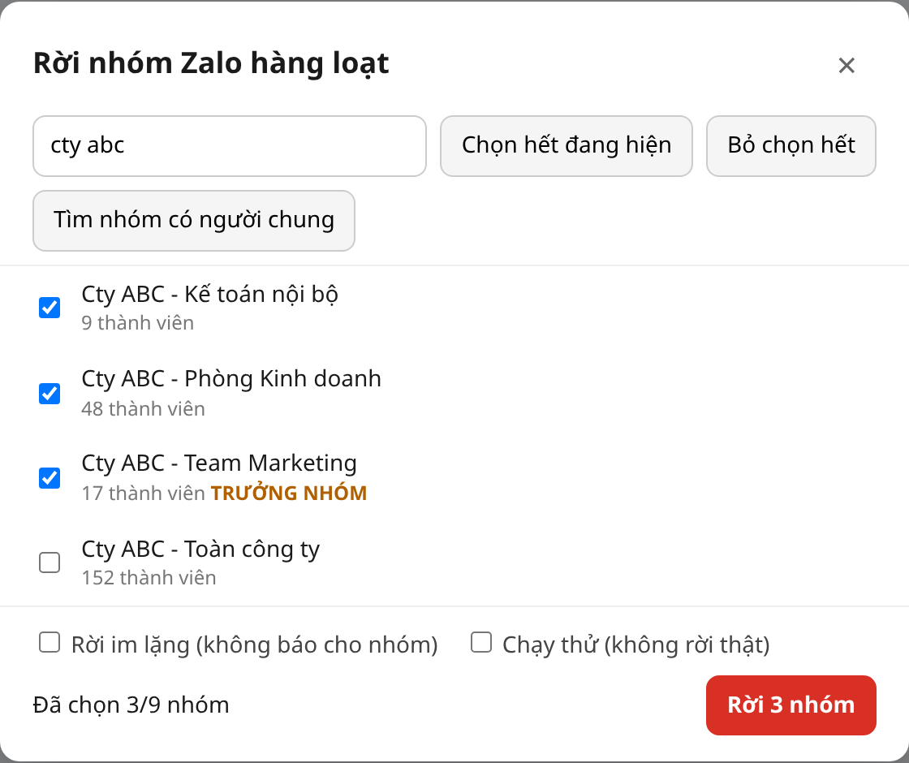
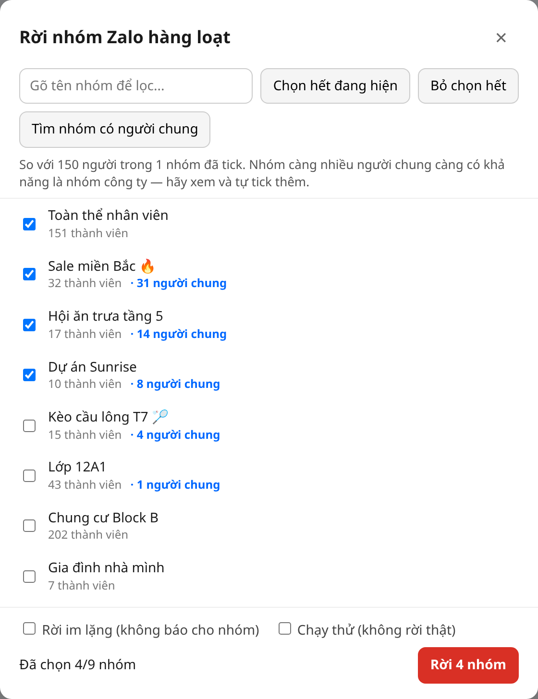
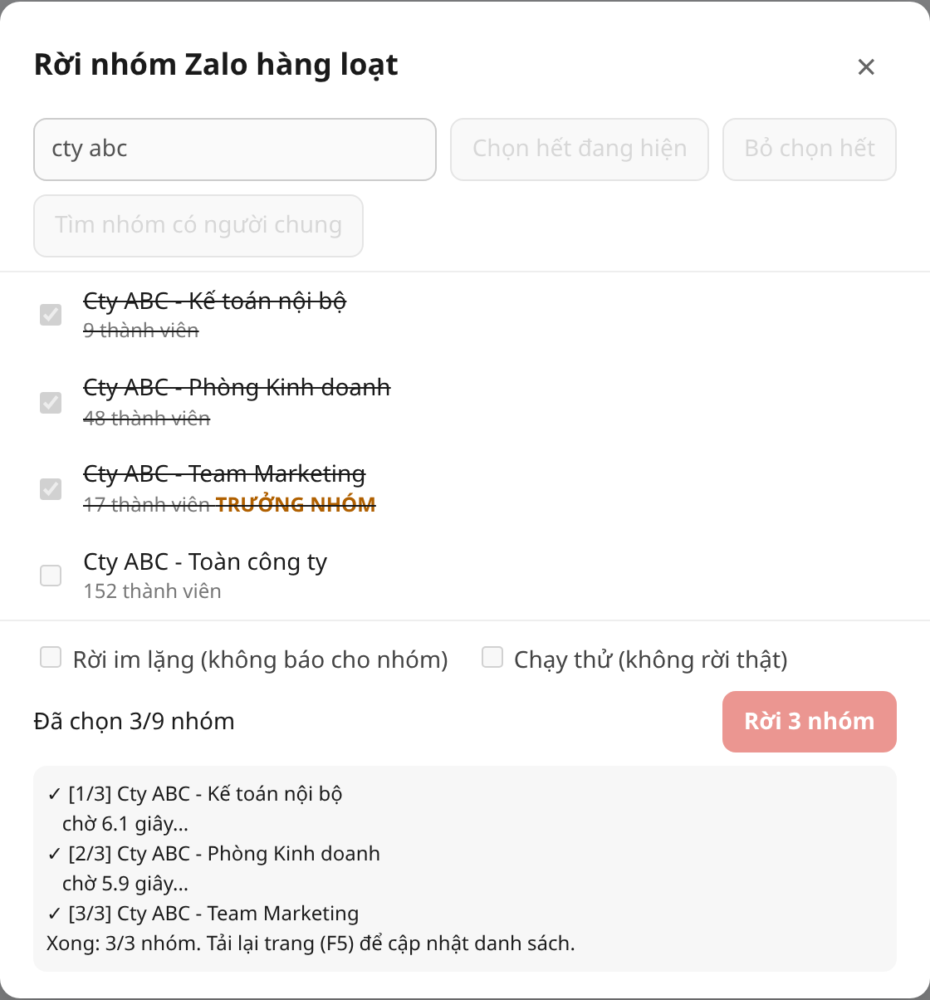

Rời nhóm Zalo hàng loạt
Dùng trên máy tính, trình duyệt Chrome / Edge / Cốc Cốc / Firefox. Không cần cài phần mềm.
Hiện thanh dấu trang
Bấm Ctrl + Shift + B (máy Mac: ⌘ + Shift + B). Một thanh mỏng sẽ hiện ra ngay dưới ô địa chỉ.
Kéo nút xanh lên thanh dấu trang
Bấm giữ chuột vào nút xanh bên dưới, kéo lên thanh dấu trang rồi thả ra. Đừng bấm vào nút ở trang này.
Không kéo được? Tạo dấu trang thủ công
Bấm chuột phải vào thanh dấu trang, chọn Thêm trang…. Ô Tên gõ Rời nhóm Zalo, ô URL dán đoạn mã dưới đây vào.
Mở Zalo Web, đăng nhập rồi bấm dấu trang
Vào chat.zalo.me, đăng nhập như bình thường và đợi danh sách tin nhắn hiện ra. Sau đó bấm vào dấu trang Rời nhóm Zalo vừa tạo.
Chọn nhóm công ty cũ
Một bảng danh sách nhóm sẽ hiện ra:
- Gõ tên công ty cũ vào ô tìm kiếm (không cần gõ dấu).
- Bấm Chọn hết đang hiện.
- Xem lại từng nhóm, bỏ tick những nhóm muốn giữ lại.

Nhóm không đặt theo tên công ty?
Nhiều nhóm như “Hội ăn trưa”, “Dự án Sunrise”… không có tên công ty. Khi đó hãy tìm theo đồng nghiệp cũ:
- Tick 1–2 nhóm chắc chắn là của công ty cũ (ví dụ nhóm toàn công ty).
- Bấm Tìm nhóm có người chung.
- Nhóm có nhiều đồng nghiệp cũ nhất sẽ được đưa lên đầu, kèm số “người chung”. Xem từng nhóm và tự tick những nhóm đúng là của công ty.

Lần đầu nên tick Chạy thử để xem trước mà không rời nhóm nào.
Bấm “Rời … nhóm” và đợi
Bấm nút đỏ, đọc lại danh sách trong hộp xác nhận rồi bấm OK. Mỗi nhóm cách nhau 3–7 giây. Trong lúc chạy cứ để nguyên tab đó, không đóng.

- Đã rời nhóm thì không tự vào lại được, phải nhờ người trong nhóm thêm lại. Hãy xem kỹ danh sách trước khi xác nhận.
- Nếu bạn là trưởng nhóm, Zalo có thể bắt chuyển quyền trưởng nhóm trước khi rời, nên các nhóm đó có thể báo lỗi.
- Nếu báo lỗi liên tục, công cụ sẽ tự dừng. Khi đó hãy đợi vài giờ rồi làm tiếp.
- Công cụ chỉ chạy trong trình duyệt của bạn và không gửi dữ liệu đi đâu khác ngoài Zalo.